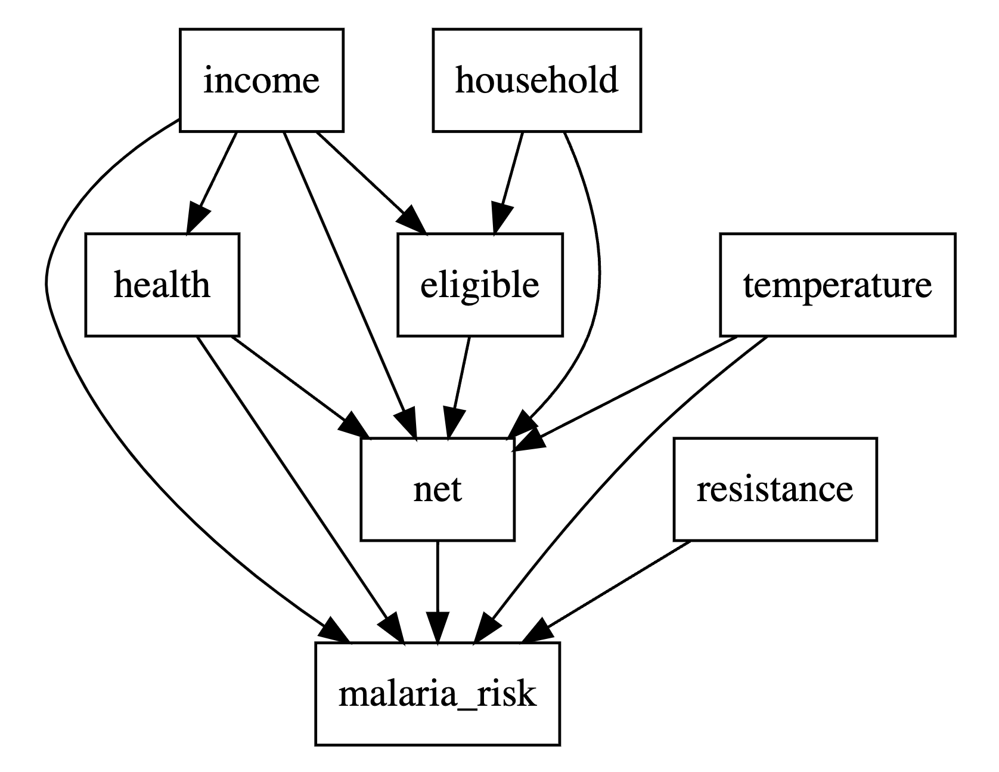

library(tidyverse)
library(GGally)
library(lavaan)
library(lavaanPlot)GEOG 6960 Causality in Geog. Studies 6
Introduction
In this lab, we’re going to explore how to build and test structural equation models (SEMs). We’ll use two examples: - The Grace and Keeley fire/plant abundance dataset (keeley.csv) - The mosquito net usage dataset (mosquito_nets.csv)
Coding SEMs
Both R and Python have packages that allow you to create SEMs and estimate coefficients based on a dataset.
- R: lavaan and sem
- Python: semopy (
pip install semopy)
First load (or install and load) the relevant packages. We’ll need some additional packages to explore the data before model building.
import numpy as np
import pandas as pd
import seaborn as sns
import semopyExample 1
Data
Let’s start by loading the Grace and Keeley dataset and exploring the values. There are (or should be) 8 variables (described in the appendix below). Note that this differs a little from the dataset used in the paper - there is an additional field (elev) which we will drop, and the community type variable is missing. Later, we’ll adjust the DAG that we use as a basis for the model accordingly.
keeley <- read.csv("./data/keeley.csv")
keeley <- keeley %>%
select(-elev)
str(keeley)'data.frame': 90 obs. of 7 variables:
$ distance: num 53.4 37 53.7 53.7 52 ...
$ abiotic : num 60.7 40.9 51 61.2 46.7 ...
$ age : int 40 25 15 15 23 24 35 14 45 35 ...
$ hetero : num 0.757 0.491 0.844 0.691 0.546 ...
$ firesev : num 3.5 4.05 2.6 2.9 4.3 4 4.8 4.8 7.25 6.2 ...
$ cover : num 1.039 0.478 0.949 1.195 1.298 ...
$ rich : int 51 31 71 64 68 34 39 66 25 31 ...keeley = pd.read_csv("./data/keeley.csv")
keeley.drop('elev', axis=1, inplace=True)
keeley.describe() distance abiotic age ... firesev cover rich
count 90.000000 90.000000 90.000000 ... 90.000000 90.000000 90.000000
mean 49.234583 49.239025 25.566667 ... 4.565000 0.691232 49.233333
std 8.829480 7.679109 12.566274 ... 1.652347 0.317235 15.105658
min 37.037450 32.593865 3.000000 ... 1.200000 0.055577 15.000000
25% 39.459800 43.812007 15.000000 ... 3.700000 0.487690 37.000000
50% 51.770850 48.036046 25.000000 ... 4.300000 0.637118 50.000000
75% 58.402237 54.898285 35.000000 ... 5.550000 0.914676 62.000000
max 60.723000 70.456286 60.000000 ... 9.200000 1.535408 85.000000
[8 rows x 7 columns]Let’s take a quick look at the distribution of the variables in the file. These are generally normally distributed (or at least close enough for our purposes). The one exception is the distance to coast variable which shows three clusters of plots.
ggpairs(keeley)sns.pairplot(keeley)
We can also take a look at the covariance matrix based on the set of variables. (As a reminder, this is what our SEM will be trying to reproduce.)
cov(keeley) distance abiotic age hetero firesev
distance 77.9597236 31.1704086 -30.8610652 0.350756757 -4.054309551
abiotic 31.1704086 58.9687166 -12.9148310 0.243915311 -2.681293440
age -30.8610652 -12.9148310 157.9112360 -0.138245879 9.423988764
hetero 0.3507568 0.2439153 -0.1382459 0.013183203 -0.009932791
firesev -4.0543096 -2.6812934 9.4239888 -0.009932791 2.730250000
cover 0.6819166 0.2988236 -1.3968842 -0.006133045 -0.229138017
rich 77.9547539 58.9674057 -57.3359551 0.792607436 -9.180505618
cover rich
distance 0.681916629 77.9547539
abiotic 0.298823649 58.9674057
age -1.396884159 -57.3359551
hetero -0.006133045 0.7926074
firesev -0.229138017 -9.1805056
cover 0.100637887 1.5772673
rich 1.577267311 228.1808989keeley.cov() distance abiotic age ... firesev cover rich
distance 77.959724 31.170409 -30.861065 ... -4.054310 0.681917 77.954754
abiotic 31.170409 58.968717 -12.914831 ... -2.681293 0.298824 58.967406
age -30.861065 -12.914831 157.911236 ... 9.423989 -1.396884 -57.335955
hetero 0.350757 0.243915 -0.138246 ... -0.009933 -0.006133 0.792607
firesev -4.054310 -2.681293 9.423989 ... 2.730250 -0.229138 -9.180506
cover 0.681917 0.298824 -1.396884 ... -0.229138 0.100638 1.577267
rich 77.954754 58.967406 -57.335955 ... -9.180506 1.577267 228.180899
[7 rows x 7 columns]Creating a structural equation model
We’ll start by creating a subset model (the same one we looked at in class). This will only use three variables (age, firesev and cover). These are related by the following DAG:
Building a structural equation model usually takes two steps. First, we need to describe the DAG that relates the variables, and second, we use a dataset to estimate values for the paths and other parameters.
Model/DAG description
Both lavaan and semopy use a similar syntax to describe the model, based on R’s formula syntax. For each endogenous variable (one that has at least one arrow coming in to it) in the graph, we need a formula to describe the paths. This is written as:
y ~ x1 + x2 + ...Where y is the variable of interest, and x1, x2, etc are all variables that are at the origin of the path flowing into y. For the DAG above, we need a formula for fire severity (firesev) and plant cover (cover). We do not need one for stand age as there are no incoming arrows in this DAG. The set of formula are specified as a character string. Note that the name of the variables in the formula need to exactly match the names of the data frame column that hold that variable.
In R, these are generally written as one formula per line:
keeley_formula =
'firesev ~ age
cover ~ age + firesev
'In Python, these are concatenated into a single line with line returns (\n) to separate the formula:
keeley_formula = 'firesev ~ age\ncover ~ age + firesev'Model fitting
In R, the function is sem(). This needs a minimum of two arguments: the model formula and the data frame containing the variables of interest. We also use the argument meanstructure = TRUE to return the intercepts:
keeley_sem1 <- sem(keeley_formula,
data = keeley,
meanstructure = TRUE)semopy follows the standard Python approach of first instantiating the semopy model with the formula, then fiting it using the keeley dataframe:
mod = semopy.Model(keeley_formula)
res = mod.fit(keeley)Now let’s explore the output.
summary(keeley_sem1,
standardize = TRUE,
rsq = TRUE)lavaan 0.6-19 ended normally after 1 iteration
Estimator ML
Optimization method NLMINB
Number of model parameters 7
Number of observations 90
Model Test User Model:
Test statistic 0.000
Degrees of freedom 0
Parameter Estimates:
Standard errors Standard
Information Expected
Information saturated (h1) model Structured
Regressions:
Estimate Std.Err z-value P(>|z|) Std.lv Std.all
firesev ~
age 0.060 0.012 4.832 0.000 0.060 0.454
cover ~
age -0.005 0.003 -1.833 0.067 -0.005 -0.191
firesev -0.067 0.020 -3.353 0.001 -0.067 -0.350
Intercepts:
Estimate Std.Err z-value P(>|z|) Std.lv Std.all
.firesev 3.039 0.351 8.647 0.000 3.039 1.850
.cover 1.122 0.090 12.398 0.000 1.122 3.556
Variances:
Estimate Std.Err z-value P(>|z|) Std.lv Std.all
.firesev 2.144 0.320 6.708 0.000 2.144 0.794
.cover 0.078 0.012 6.708 0.000 0.078 0.780
R-Square:
Estimate
firesev 0.206
cover 0.220There’s quite a lot of output in the model summary. The various sections (from the top) are:
- Model fitting details: the fitting and optimization method and the number of parameters estimated
- Model test: the results of the Chi-squared test for goodness-of-fit
- Parameter estimates: settings for parameter estimates (incl. standard errors)
- Regressions: the path coefficients. For each one, there is
- The estimate
- The standard error
- The estimate as a \(z\)-score
- The \(p\)-value
- The estimate standardized for any latent variables (we don’t have any)
- The standardized coefficient. This is the coefficient we would obtain if all the variables were \(z\)-score transformed, and allows comparison between the strength of the different paths
- Intercepts: estimate of intercept/mean values for each endogenous variable. The columns are the same as the previous table
- Variances: the estimate variance of the endogenous variables
- R-Square: the \(r\)-squared value for each endogenous variable (how much of the variance of that variable was explained)
Once fit, the original model contains details of the fitting process (aglorithm, optimizer, etc):
print(res)Name of objective: MLW
Optimization method: SLSQP
Optimization successful.
Optimization terminated successfully
Objective value: 0.000
Number of iterations: 13
Params: 0.060 -0.005 -0.067 0.078 2.145The estimated model parameters, as well as standard errors and \(p\)-values, are in the fitted model object. Path coefficients are noted with ~ and variable variance is noted with ~~:
mod.inspect() lval op rval Estimate Std. Err z-value p-value
0 firesev ~ age 0.059658 0.012353 4.829254 1.370455e-06
1 cover ~ age -0.004827 0.002637 -1.830613 6.715826e-02
2 cover ~ firesev -0.067239 0.020052 -3.353280 7.985976e-04
3 firesev ~~ firesev 2.144768 0.319723 6.708204 1.970335e-11
4 cover ~~ cover 0.077611 0.011570 6.708204 1.970335e-11Note that the intercepts are not returned by default. You can get these with:
from semopy.means import estimate_means
estimate_means(mod) lval op rval Estimate
0 age ~ 1 25.566667
1 firesev ~ 1 3.039744
2 cover ~ 1 1.121591This returns the intercepts plus the mean of the exogenous variables (age in this example)
Model diagnostics
In addition to the summary output, we can access model diagnostics using other functions. Using anova() will run the Chi-squared test comparing this model to a fully saturated model. In this case, the model we have fit is the saturated model, so the Chi-squared cannot be calculated (but see below for a better test):
anova(keeley_sem1)Chi-Squared Test Statistic (unscaled)
Df AIC BIC Chisq Chisq diff Df diff Pr(>Chisq)
Saturated 0 0
Model 0 363.4 380.9 0 0 0 You can also obtain the model AIC with, not too surprisingly, the AIC() function. There are several other diagnostics that can be obtained with the fitMeasures function. This produces a large number of different test scores, so we’ll limit it here to the root-mean squared error of approximation (RMSEA), which should ideally be below 0.1. Again, with a saturated model, this is zero and not very meaningful.
fitMeasures(keeley_sem1, c('rmsea'))rmsea
0 In Python, we can access model diagnostics using the calc_stats function. This produces a large amount of metrics, including the Chi-squared value, CFI, RMSEA, etc
semopy.calc_stats(mod) DoF DoF Baseline chi2 ... AIC BIC LogLik
Value 1 4 0.00002 ... 10.0 22.499048 2.224589e-07
[1 rows x 14 columns]Here’s the results of the Chi-squared test. In this case, the model we have fit is the saturated model, so the Chi-squared cannot be calculated as there are no degrees of freedom. (semopy uses an approximation so the Chi-squared value is not exactly equal to zero.)
semopy.calc_stats(mod)[['chi2', 'chi2 p-value']] chi2 chi2 p-value
Value 0.00002 0.99643Model visualization
An easier way to portray the results is to plot out the DAG with the SEM estimated coefficients on the paths. This should show significant paths between age and firesev, and between firesev and cover, but the direct path from age to cover is not significant.
lavaanPlot(keeley_sem1, coef=TRUE, stars="regress")The semplot() function provides a wrapper to the graphviz library (you will need to have this installed), and can be used to visualize the model. This will render in a Jupyter notebook or as an external file. (Note that g below is a graphviz object and can be modified.)
g = semopy.semplot(mod, "test.png")
g<graphviz.graphs.Digraph object at 0x1750872e0>A simpler model
As the path between age and cover appears non-significant, we can ask if it is really a necessary part of the model. To do this, we’ll drop the path, rebuild the model and check the results of the Chi-squared test.
keeley_formula =
'firesev ~ age
cover ~ firesev
'
keeley_sem2 <- sem(keeley_formula,
data = keeley,
meanstructure = TRUE)summary(keeley_sem2,
standardize = TRUE,
rsq = TRUE)lavaan 0.6-19 ended normally after 1 iteration
Estimator ML
Optimization method NLMINB
Number of model parameters 6
Number of observations 90
Model Test User Model:
Test statistic 3.297
Degrees of freedom 1
P-value (Chi-square) 0.069
Parameter Estimates:
Standard errors Standard
Information Expected
Information saturated (h1) model Structured
Regressions:
Estimate Std.Err z-value P(>|z|) Std.lv Std.all
firesev ~
age 0.060 0.012 4.832 0.000 0.060 0.454
cover ~
firesev -0.084 0.018 -4.611 0.000 -0.084 -0.437
Intercepts:
Estimate Std.Err z-value P(>|z|) Std.lv Std.all
.firesev 3.039 0.351 8.647 0.000 3.039 1.850
.cover 1.074 0.088 12.166 0.000 1.074 3.406
Variances:
Estimate Std.Err z-value P(>|z|) Std.lv Std.all
.firesev 2.144 0.320 6.708 0.000 2.144 0.794
.cover 0.081 0.012 6.708 0.000 0.081 0.809
R-Square:
Estimate
firesev 0.206
cover 0.191keeley_formula = 'firesev ~ age\ncover ~ firesev'
mod = semopy.Model(keeley_formula)
res = mod.fit(keeley)
mod.inspect() lval op rval Estimate Std. Err z-value p-value
0 firesev ~ age 0.059616 0.012352 4.826435 1.389991e-06
1 cover ~ firesev -0.083902 0.018201 -4.609770 4.031137e-06
2 firesev ~~ firesev 2.144243 0.319645 6.708204 1.970335e-11
3 cover ~~ cover 0.080476 0.011997 6.708204 1.970335e-11semopy.calc_stats(mod)[['chi2', 'chi2 p-value']] chi2 chi2 p-value
Value 3.297465 0.192294Now we get a value for the Chi-squared test of about 3.3, and a \(p\)-value above 0.05, which suggests there is no significant difference between this simpler model and the full covariance matrix. Or to put it more simply, dropping the path from age to cover has not made the model notably worse.
The full model
Now let’s make the full model, detailed in the DAG below:

As before, start by building the paths. Note that, apart from distance, all variables are endogenous and will need a formula.
keeley_formula =
'
age ~ distance
hetero ~ distance
abiotic ~ distance
firesev ~ age
cover ~ firesev
rich ~ cover + hetero + abiotic + distance
'keeley_formula = 'age ~ distance\nhetero ~ distance\nabiotic ~ distance\nfiresev ~ age\ncover ~ firesev\nrich ~ cover + hetero + abiotic + distance'Now let’s build the model and check how well it fits.
keeley_sem3 <- sem(keeley_formula,
data = keeley,
meanstructure = TRUE)Warning: lavaan->lav_data_full():
some observed variances are (at least) a factor 1000 times larger than
others; use varTable(fit) to investigatesummary(keeley_sem3)lavaan 0.6-19 ended normally after 1 iteration
Estimator ML
Optimization method NLMINB
Number of model parameters 21
Number of observations 90
Model Test User Model:
Test statistic 20.866
Degrees of freedom 12
P-value (Chi-square) 0.052
Parameter Estimates:
Standard errors Standard
Information Expected
Information saturated (h1) model Structured
Regressions:
Estimate Std.Err z-value P(>|z|)
age ~
distance -0.396 0.144 -2.747 0.006
hetero ~
distance 0.004 0.001 3.498 0.000
abiotic ~
distance 0.400 0.081 4.911 0.000
firesev ~
age 0.060 0.012 4.832 0.000
cover ~
firesev -0.084 0.018 -4.611 0.000
rich ~
cover 13.648 3.405 4.008 0.000
hetero 44.512 10.012 4.446 0.000
abiotic 0.491 0.158 3.103 0.002
distance 0.484 0.145 3.341 0.001
Intercepts:
Estimate Std.Err z-value P(>|z|)
.age 45.057 7.207 6.252 0.000
.hetero 0.462 0.064 7.180 0.000
.abiotic 29.554 4.072 7.258 0.000
.firesev 3.039 0.351 8.647 0.000
.cover 1.074 0.088 12.166 0.000
.rich -38.616 9.200 -4.198 0.000
Variances:
Estimate Std.Err z-value P(>|z|)
.age 144.076 21.478 6.708 0.000
.hetero 0.011 0.002 6.708 0.000
.abiotic 45.989 6.856 6.708 0.000
.firesev 2.144 0.320 6.708 0.000
.cover 0.081 0.012 6.708 0.000
.rich 103.534 15.434 6.708 0.000mod = semopy.Model(keeley_formula)
res = mod.fit(keeley)
mod.inspect() lval op rval Estimate Std. Err z-value p-value
0 age ~ distance -0.395876 0.144576 -2.738183 6.177962e-03
1 hetero ~ distance 0.004499 0.001286 3.498238 4.683427e-04
2 abiotic ~ distance 0.399777 0.081389 4.911938 9.018049e-07
3 firesev ~ age 0.059678 0.012313 4.846912 1.253983e-06
4 cover ~ firesev -0.083934 0.018190 -4.614244 3.945291e-06
5 rich ~ cover 13.626100 3.417470 3.987189 6.686079e-05
6 rich ~ hetero 44.282423 10.049588 4.406392 1.051067e-05
7 rich ~ abiotic 0.491382 0.158800 3.094346 1.972476e-03
8 rich ~ distance 0.485038 0.145445 3.334848 8.534589e-04
9 abiotic ~~ abiotic 45.961067 6.851471 6.708204 1.970335e-11
10 age ~~ age 145.028612 21.619589 6.708204 1.970335e-11
11 cover ~~ cover 0.080498 0.012000 6.708204 1.970335e-11
12 firesev ~~ firesev 2.143627 0.319553 6.708204 1.970335e-11
13 hetero ~~ hetero 0.011476 0.001711 6.708204 1.970335e-11
14 rich ~~ rich 104.311698 15.549870 6.708204 1.970335e-11semopy.calc_stats(mod)[['chi2', 'chi2 p-value']] chi2 chi2 p-value
Value 20.871316 0.075513The goodness-of-fit value indicates that this model fits well (i.e. \(p>0.05\)), but it is close to the threshold. We can explore which of the missing paths may be the most useful to include to improve the fit by calculating the modification indices. These indicate the change in Chi-squared value if a path was included in the model.
In R, we can calculate these with modificationIndices. We’ll get these, sort for the largest index and print the top 5
modificationIndices(keeley_sem3) %>%
arrange(-mi) %>%
head(5) lhs op rhs mi epc sepc.lv sepc.all sepc.nox
1 hetero ~~ cover 6.889 -0.008 -0.008 -0.277 -0.277
2 hetero ~ cover 6.544 -0.092 -0.092 -0.253 -0.253
3 cover ~ hetero 4.078 -0.529 -0.529 -0.192 -0.192
4 distance ~ cover 3.404 5.592 5.592 0.201 0.201
5 firesev ~ cover 3.238 2.157 2.157 0.414 0.414The semopy package unfortunately does not currently have a function to calculate these.
The path with the largest impact on the Chi-squared value is between cover and hetero. Physically, the most likely direction for this is that heterogeneity causally affects cover, so we’ll include that (cover ~ firesev + hetero) and update this model.
keeley_formula =
'
age ~ distance
hetero ~ distance
abiotic ~ distance
firesev ~ age
cover ~ firesev + hetero
rich ~ cover + hetero + abiotic + distance
'
keeley_sem4 <- sem(keeley_formula,
data = keeley,
meanstructure = TRUE)Warning: lavaan->lav_data_full():
some observed variances are (at least) a factor 1000 times larger than
others; use varTable(fit) to investigatesummary(keeley_sem4)lavaan 0.6-19 ended normally after 1 iteration
Estimator ML
Optimization method NLMINB
Number of model parameters 22
Number of observations 90
Model Test User Model:
Test statistic 16.690
Degrees of freedom 11
P-value (Chi-square) 0.117
Parameter Estimates:
Standard errors Standard
Information Expected
Information saturated (h1) model Structured
Regressions:
Estimate Std.Err z-value P(>|z|)
age ~
distance -0.396 0.144 -2.747 0.006
hetero ~
distance 0.004 0.001 3.498 0.000
abiotic ~
distance 0.400 0.081 4.911 0.000
firesev ~
age 0.060 0.012 4.832 0.000
cover ~
firesev -0.086 0.018 -4.823 0.000
hetero -0.530 0.256 -2.069 0.039
rich ~
cover 13.648 3.454 3.952 0.000
hetero 44.512 10.178 4.373 0.000
abiotic 0.491 0.158 3.103 0.002
distance 0.484 0.145 3.340 0.001
Intercepts:
Estimate Std.Err z-value P(>|z|)
.age 45.057 7.207 6.252 0.000
.hetero 0.462 0.064 7.180 0.000
.abiotic 29.554 4.072 7.258 0.000
.firesev 3.039 0.351 8.647 0.000
.cover 1.445 0.198 7.286 0.000
.rich -38.616 9.560 -4.039 0.000
Variances:
Estimate Std.Err z-value P(>|z|)
.age 144.076 21.478 6.708 0.000
.hetero 0.011 0.002 6.708 0.000
.abiotic 45.989 6.856 6.708 0.000
.firesev 2.144 0.320 6.708 0.000
.cover 0.077 0.011 6.708 0.000
.rich 103.534 15.434 6.708 0.000keeley_formula = 'age ~ distance\nhetero ~ distance\nabiotic ~ distance\nfiresev ~ age\ncover ~ firesev + hetero\nrich ~ cover + hetero + abiotic + distance'
mod = semopy.Model(keeley_formula)
res = mod.fit(keeley)
mod.inspect() lval op rval Estimate Std. Err z-value p-value
0 age ~ distance -0.395884 0.144581 -2.738148 6.178627e-03
1 hetero ~ distance 0.004500 0.001286 3.498660 4.676024e-04
2 abiotic ~ distance 0.399846 0.081395 4.912440 8.994979e-07
3 firesev ~ age 0.059678 0.012313 4.846534 1.256371e-06
4 cover ~ firesev -0.085841 0.017788 -4.825676 1.395294e-06
5 cover ~ hetero -0.529902 0.256165 -2.068598 3.858379e-02
6 rich ~ cover 13.622034 3.466325 3.929821 8.500921e-05
7 rich ~ hetero 44.276342 10.215595 4.334191 1.462971e-05
8 rich ~ abiotic 0.491416 0.158783 3.094888 1.968870e-03
9 rich ~ distance 0.485102 0.145457 3.335023 8.529224e-04
10 abiotic ~~ abiotic 45.967631 6.852450 6.708204 1.970335e-11
11 age ~~ age 145.038118 21.621006 6.708204 1.970335e-11
12 cover ~~ cover 0.076849 0.011456 6.708204 1.970335e-11
13 firesev ~~ firesev 2.144067 0.319619 6.708204 1.970335e-11
14 hetero ~~ hetero 0.011476 0.001711 6.708204 1.970335e-11
15 rich ~~ rich 104.304465 15.548792 6.708204 1.970335e-11semopy.calc_stats(mod)[['chi2', 'chi2 p-value']] chi2 chi2 p-value
Value 16.694584 0.161452The new model shows a marginally significant negative relationship between heterogeneity and cover.
Example 2
For a second example, you’ll build and fit a structural equation model to the mosquito net data that we briefly introduced in the last lab. This is a simulated dataset on how the use of mosquito nets affects the risk of malaria (see appendix for details). Unlike the previous example, you’ll need to work out the code on your own.
Data
mosquito <- read.csv("./data/mosquito_nets.csv")
mosquito <- mosquito %>%
select(-id)
str(mosquito)'data.frame': 1752 obs. of 9 variables:
$ net : logi TRUE FALSE FALSE TRUE FALSE FALSE ...
$ net_num : int 1 0 0 1 0 0 1 0 0 0 ...
$ malaria_risk: int 33 42 80 34 44 25 19 35 32 40 ...
$ income : int 781 974 502 671 728 1050 1146 1093 1037 828 ...
$ health : int 56 57 15 20 17 48 65 75 60 36 ...
$ household : int 2 4 3 5 5 1 3 5 3 3 ...
$ eligible : logi FALSE FALSE FALSE TRUE FALSE FALSE ...
$ temperature : num 21.1 26.5 25.6 21.3 19.2 25.3 27.4 29.8 27.6 21.3 ...
$ resistance : int 59 73 65 46 54 34 45 65 55 54 ...ggpairs(mosquito)ggplot(mosquito, aes(x = net, y = malaria_risk)) +
geom_boxplot() +
theme_bw()mosquito = pd.read_csv("./data/mosquito_nets.csv")
mosquito.drop('id', axis=1, inplace=True)
mosquito.describe() net_num malaria_risk ... temperature resistance
count 1752.000000 1752.00000 ... 1752.000000 1752.000000
mean 0.388699 35.58847 ... 23.813128 47.789384
std 0.487594 15.45673 ... 4.107322 13.857257
min 0.000000 10.00000 ... 15.600000 5.000000
25% 0.000000 24.00000 ... 20.600000 38.000000
50% 0.000000 31.00000 ... 23.800000 48.000000
75% 1.000000 46.00000 ... 26.900000 57.000000
max 1.000000 90.00000 ... 32.200000 95.000000
[8 rows x 7 columns]sns.pairplot(mosquito)sns.boxplot(mosquito, x="net", y="malaria_risk")DAG
Now try to fit the full model as described by the DAG below. Start by creating the set of model formulae. A good first order test is to check that the total number of covariates (across all formulae) equals the number of arrows in the DAG.

Once you’ve done this, fit and visualize the model then check the Chis-squared test. Does this give a good fit? Are there any missing paths that should be included?
Appendix: Data files
Grace and Keely dataset keeley.csv
| Column header | Variable |
|---|---|
| distance | Distance to coast (m) |
| elev | Elevation a.s.l. |
| abiotic | Abiotic favorability |
| age | Age of stand before fire |
| hetero | Plot heterogeneity |
| firesev | Severity of fire |
| cover | Cover of plants |
| rich | Plant species richness |
Mosquito net usage dataset mosquito_nets.csv
Taken from https://github.com/r-causal/causalworkshop
| Column header | Variable |
|---|---|
| id | observation ID |
| net | Did the household use nets (F/T) |
| net_num | Did the household use nets (0/1) |
| malaria_risk | likelihood that someone in the household will be infected (0-100) |
| income | Monthly income ($) |
| health | Self-reported healthiness (0-100) |
| household | Number of people living in the household |
| eligible | Eligibility for the free net program (0/1) |
| temperature | Average temperature at night (C) |
| resistance | Resistance of mosquito strains to insecticide |